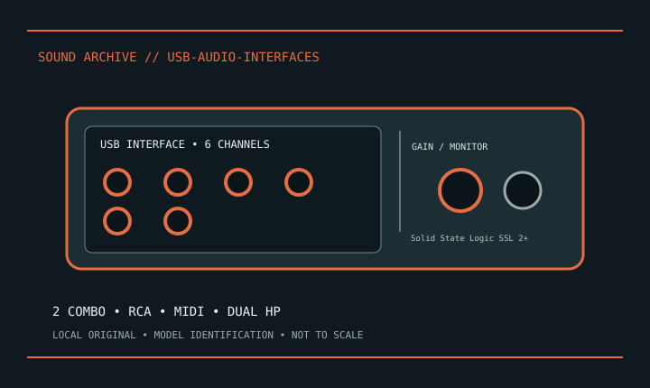

[ INDIVIDUAL MODEL // SOUND HARDWARE ]
Solid State Logic SSL 2+
USB-C interface; 2 combo preamps, balanced monitor and RCA outputs, dual headphone jacks and MIDI DIN; 24-bit/192 kHz, 4K mode and 48 V.

Model-specific specifications
| Exact model / scope | Solid State Logic SSL 2+. Save model-specific driver and 4K state. Disable +48 V before repatching; SSL 2+ differs from SSL 2. |
|---|---|
| Bus / host | USB; connector, protocol and bus-power details are specified in the product record above. |
| Documented functions / connectors | USB-C interface; 2 combo preamps, balanced monitor and RCA outputs, dual headphone jacks and MIDI DIN; 24-bit/192 kHz, 4K mode and 48 V. |
| Conversion / formats | Use the model-specific rate/conversion specifications above and the linked manufacturer guide. |
| Drivers / OS | Use the linked model-specific manufacturer support/manual page. Driver and supported OS availability depends on release; no undocumented OS compatibility is asserted. |
| Power / microphone | Switchable +48 V only on documented mic inputs; follow model manual and disable before repatching. |
Compatibility & preservation
Save model-specific driver and 4K state. Disable +48 V before repatching; SSL 2+ differs from SSL 2.
- Photograph model/revision, connectors and included accessories before service.
- Retain the matching manual, driver/firmware and known-working host/routing configuration.
- Follow documented signal levels, connector pinout and power requirements; physical fit alone is not compatibility.
Manufacturer sources
- Manufacturer product information — Solid State Logic SSL 2+Product/model source; match the exact revision and board.
- Manufacturer support and documentationOfficial model documentation, drivers and OS compatibility information.